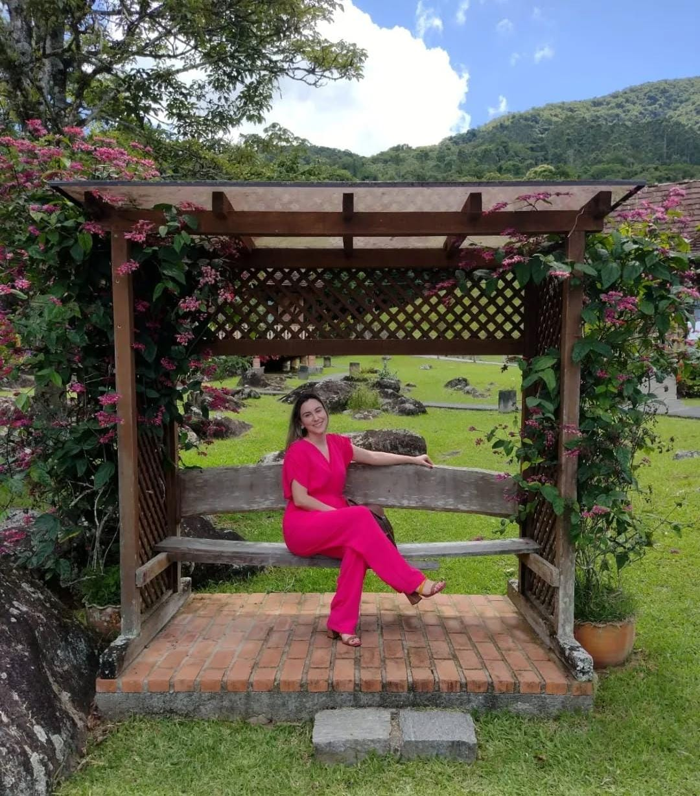
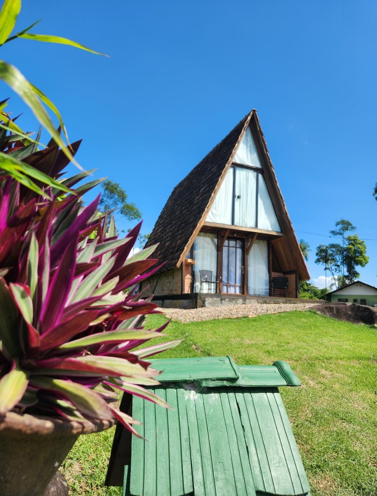
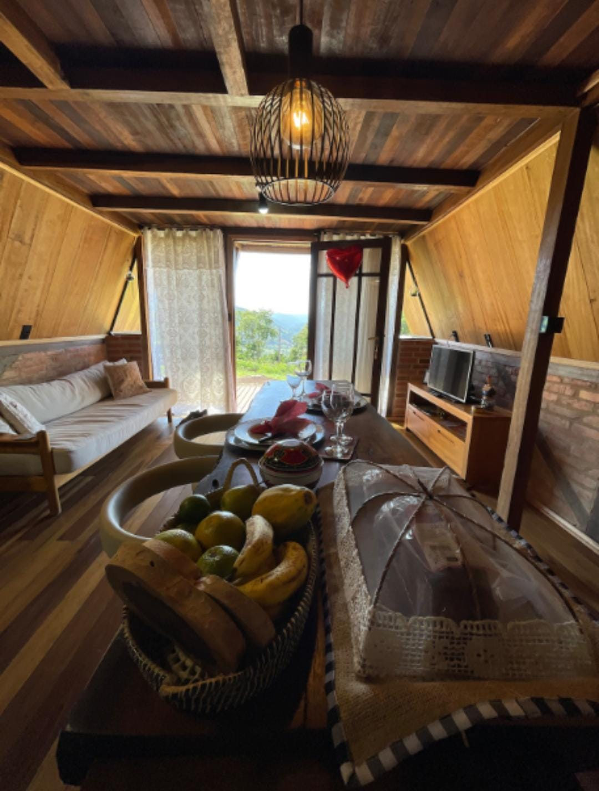
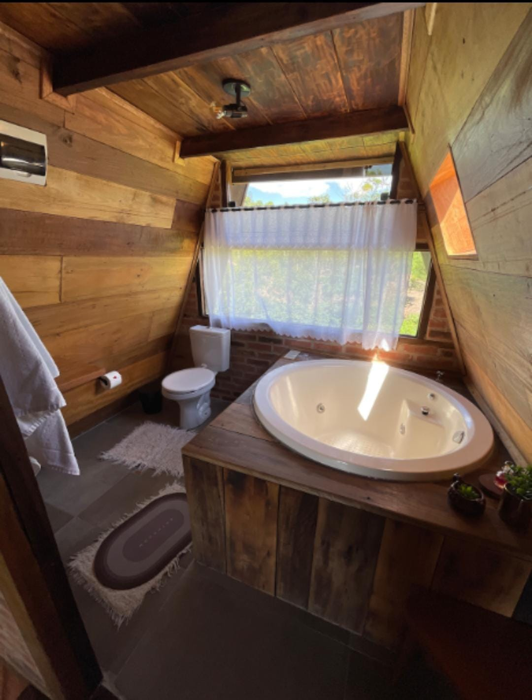
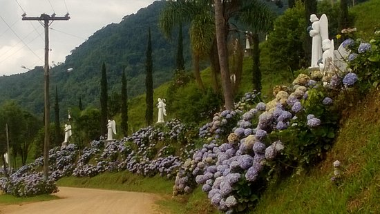
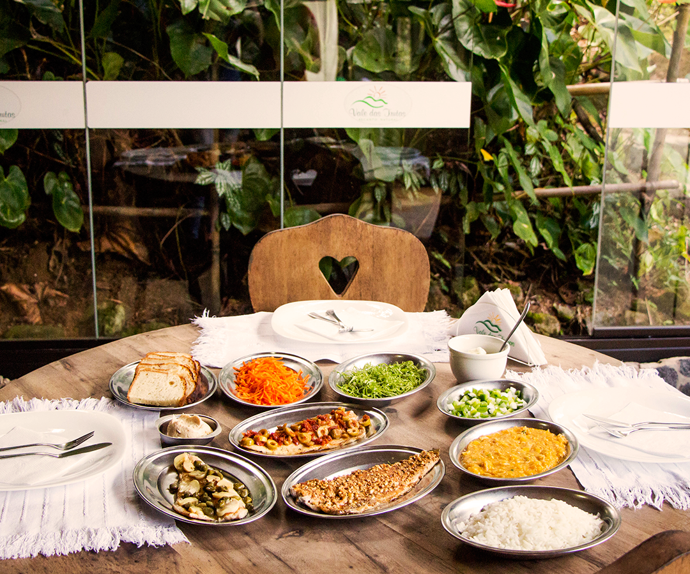
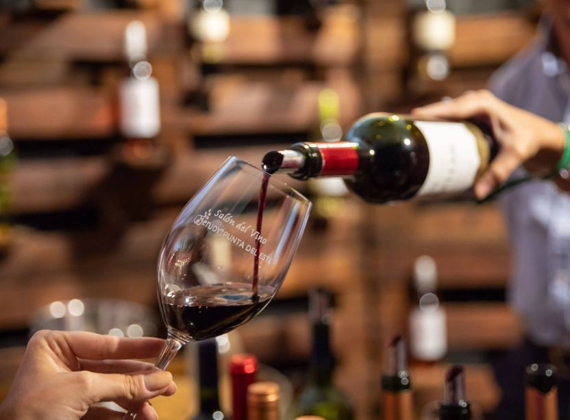
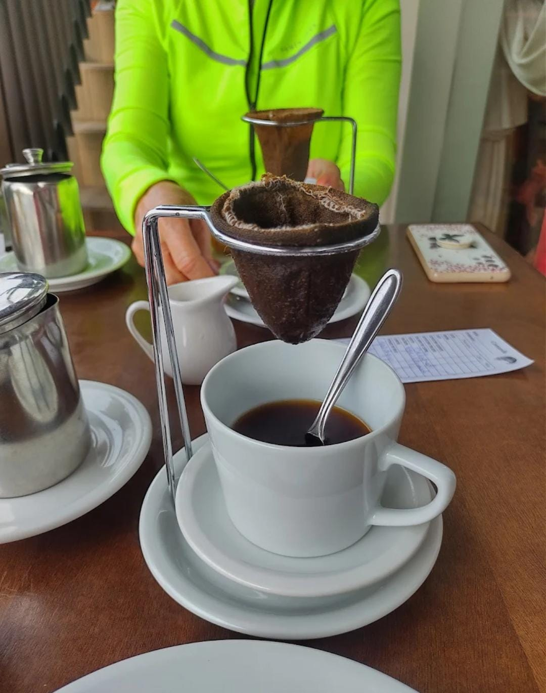
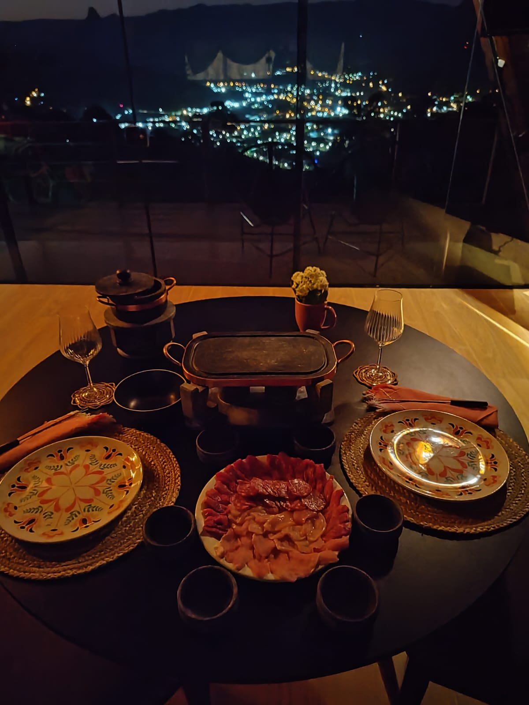
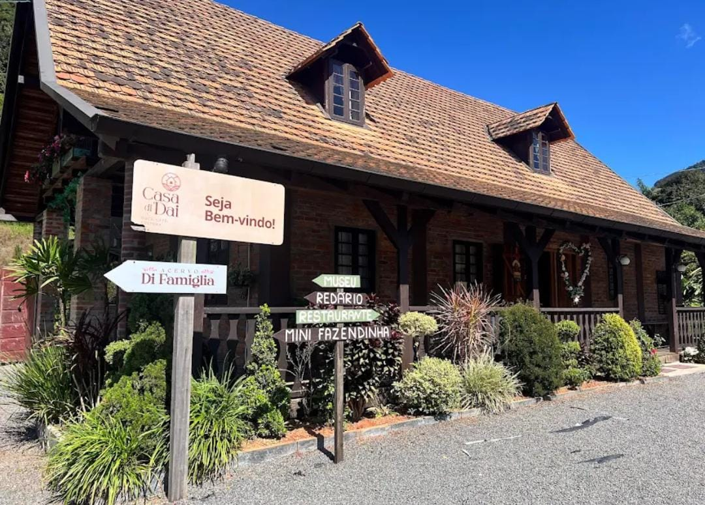

Hoje é o dia de celebrar a vida de uma mulher incrível: guerreira, batalhadora e inspiradora. Você é daquelas pessoas que não apenas enfrentam desafios, mas transformam obstáculos em degraus para crescer. Sua força, dedicação e coração generoso fazem de você um exemplo para todos à sua volta. Que este novo ciclo traga ainda mais conquistas, saúde, amor e momentos de alegria. Continue brilhando com essa luz única que ilumina quem tem o privilégio de conviver com você. Ainda bem que eu tenho muita sorte kk. Parabéns pelo seu dia meu amor, e que a vida te devolva em dobro todo o bem que você espalha! 🌹💪💖 
Como minha dama já possui um guarda roupa cheio de lindas peças e todo tipo de produtos, fiquei em dúvida sobre qual seria o presente ideal. Primeiramente pensei em um jantar chique, mas então percebi o quão ansiosa por viagens você está. Desta forma, decidi juntar o jantar com uma viagem especial para comemorar mais um ano de vida da mulher que mudou minha vida e me traz felicidade e aconcheco todos os dias. Talvez com este presente posso, retribuir pelo menos uma fração da alegria que você me traz.
Primeira parada da nossa viagem relaxante: um chalé todo iluminado, só para nós dois. O menu? Amor temperado com risadas e um jantar de dar água na boca.
Acordar e ver você é meu café favorito. Mas o café quentinho do chalé também vair ajudar!
Nada melhor que começar o dia com a barriguinha cheia e um belo banho de banheira com meu amor para relxar.
Após uma hidro relaxante é hora de aproveitarmos o dia lindo que teremos. Se os anjos têm um caminho, com certeza é para passear com você.
E como meu amor adora peixe... Vamos experimentar um rodízio de trutas de tirar o fôlego.
Um dia lindo, uma comemoração alegre, e a companhia do meu amor vai combinar muito bem com um belo vinho em uma seção de degustação em uma vinícula.
Depois de tanto romance, nada como um bolo fofinho e um café quentinho para recarregar nossas energias
Para relembrar nossa noite de noivado em corupá, resolvi fazer um remake da nossa noite de fundue.
Mais um dia lindo se iniciando com uma pessoa ainda mais linda ao meu lado. O roteiro é tomar um belo de um café e aproveitar as últimas horas que temos neste chalé maravilhoso

Fechamos a viagem com sabor e tradição. Um pedacinho da cultura local para guardar na memória, e no estômago!
A conclusão é que vai ser uma baita de uma viagem para descansarmos, comermos e nos amarmos bastante. O negócio é aproveitar cada momento e obrigado por fazer parte de cada um deles.
Espero que tudo saia como planejado kkk e espero mais ainda que você goste da viagem e do roteiro. Se não gostar lascou, por que já reservei tudo kkk.